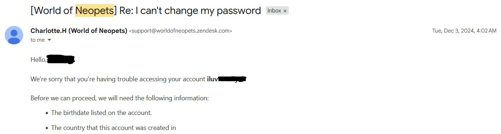
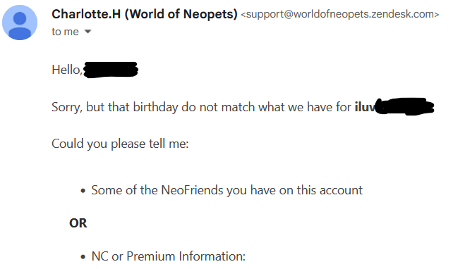
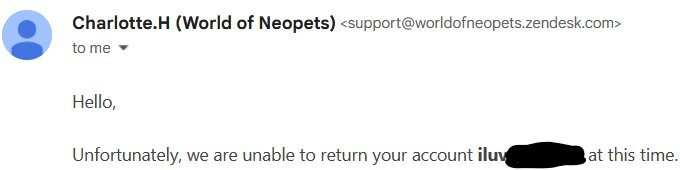
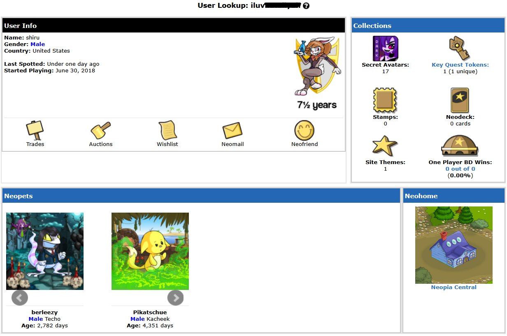

|
View my profiles on: |
I GOT ACCESS TO MY NEOPETS ACCOUNT AGAIN!! YAY!!!2/11/26 This actually happened ABOUT A WEEK AGO... but I writing about it now. So, if you've heard my song i don't care anymore :(, or seen the neo/geo music video then you probably know that I got locked out of my neopets account. Basically, I forgot my password, and for the past few years whenever I would try to send an email for a password reset, it either wouldn't send or the Neopets Support Team just wouldn't be able to help me.  This is an email I received a few years ago after submitting a support ticket or whatever. So, I told the lady what I thought the birthdate of the account was. Turns out I was wrong. My mother used to tell me to always lie about my information online, so whenever I would sign up for any website like Club Penguin, or Animal Jam, or in this case Neopets, my birthday would be completely different. Except in this case, instead of me setting my birthdate to like 1978 or something, I just made it the day I made my account... and I forgot...
 That birthday do not match... : ( Darn it. Unfortunately, I did not have any NeoFriends on my account (I still don't have any, if you want to be my NeoFriend send me a DM on instagram and I'll send you my username. The reason I have my username censored on here is because it has the name of my 5th grade crush in it... It's just super embarrasing, I don't know why I decided to make my name on neopets "I Luv [insert girl I liked]". I was a weird kid. Actually, I'm still weird now. W'ever.) and I did not spend any Neocash, so I couldn't provide any of the information I needed.
 I was not able to log into my account just yet. Then on a random Monday night, I decided to try changing my password again and it worked.
 FINALLY, after like 4 years, I can log into my account again! One of the first things you might notice is that I do have Neocash items (That was a recent change, somehow I had 900 NC when I got my account back, I don't know how but it doesn't affect me in a bad way so I'll take it). Another thing you might notice is that, the name of my neopet is berleezy. Yes, berleezy as in the YouTuber, Berleezy. I was a huge fan of his videos back then, I used to watch his EXPOSED stuff all the time (I still do). I am, and have always been very unoriginal. Also, my other neopet, Pikatschue, is adopted. That's why he's older than my account age.
My neopet looks like Gerard Way in the I'm Not Okay video lol.
|
|
View my profiles on: |
 Soundcloud
Soundcloud iTunes
iTunes YouTube
YouTube Instagram
Instagram